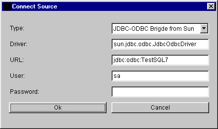
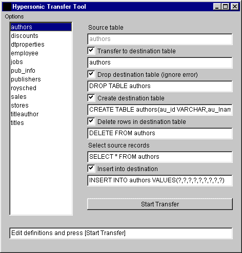

The Hypersonic Transfer Tool is a Java application that can transfer data from any JDBC data source to another. It is currently mainly tested with Hypersonic SQL, but should work with every database as source and as target that support the JDBC interface. It is (as all other Java programs here) Open Source and free.
You can test the applet version of the Transfer Tool. It can be started from the Database Manager, Options / Transfer, but when the Database Manager is running as an Applet, you can't connect to other databases than the Hypersonic SQL In-Memory database.
This are the steps of a data transfer using the Transfer Tool:

The connection to the databases is simple: select the driver class name, the url, the user name and the password. The connection dialog for the target database looks the same.

After the Transfer Tool is connected, the tables of the source database are read and listed on the left side. On the right side, it is possible to modify the transfer settings for each table. The progress / error message is shown on the bottom line.
After selecting a table on the right side, the transfer options for this table can be changed:
By default all rows are transfered. But for a quick test if the transfer will work for all tables, the maximum count records can be set to 10 or 1000.
All Java source code (including the database engine of course) of this program are Open Source. The Transfer Tool is included in the download. Transfer Tool is programmed using AWT.